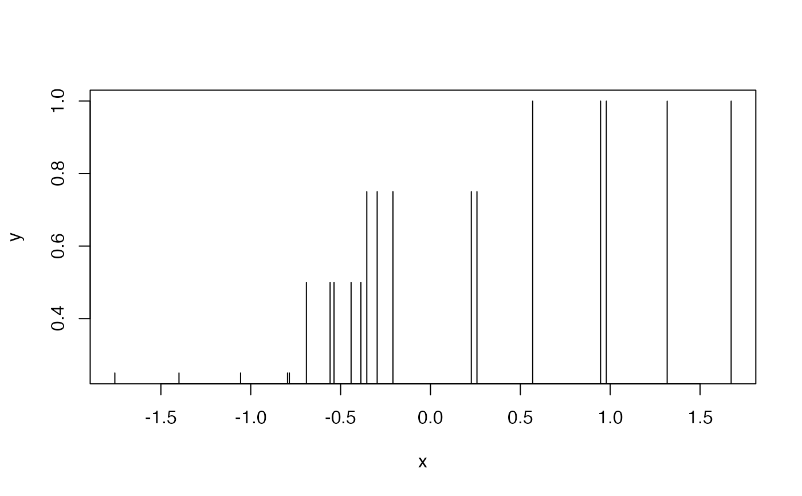

Ordinal Transformation of a Vector
qvector.RdConverts a numeric vector into an ordinal one based on quantiles.
Usage
qvector(x, probs = seq(0, 1, 0.25), na.rm = FALSE, ...)Value
A numeric vector of length the same as the input vector, containing the respective (upper) quantile values.
References
S\'olymos P. (2008) mefa: an R package for handling and reporting count data. Community Ecology 9, 125–127.
S\'olymos P. (2009) Processing ecological data in R with the mefa package. Journal of Statistical Software 29(8), 1–28. doi:10.18637/jss.v029.i08
Author
P\'eter S\'olymos, solymos@ualberta.ca
Examples
x <- rnorm(20)
x
#> [1] 1.6728826 -0.3543612 0.9463479 1.3168264 -0.2966400 -0.3872136
#> [7] -0.7854327 -1.0567369 -0.7955414 -1.7562754 -0.6905379 -0.5585420
#> [13] -0.5366633 0.2271271 0.9784549 -0.2088827 -1.3994105 0.2585373
#> [19] -0.4417995 0.5685999
y <- qvector(x)
y
#> [1] 1.00 0.75 1.00 1.00 0.75 0.50 0.25 0.25 0.25 0.25 0.50 0.50 0.50 0.75 1.00
#> [16] 0.75 0.25 0.75 0.50 1.00
rbind(x, y)
#> [,1] [,2] [,3] [,4] [,5] [,6] [,7]
#> x 1.672883 -0.3543612 0.9463479 1.316826 -0.29664 -0.3872136 -0.7854327
#> y 1.000000 0.7500000 1.0000000 1.000000 0.75000 0.5000000 0.2500000
#> [,8] [,9] [,10] [,11] [,12] [,13] [,14]
#> x -1.056737 -0.7955414 -1.756275 -0.6905379 -0.558542 -0.5366633 0.2271271
#> y 0.250000 0.2500000 0.250000 0.5000000 0.500000 0.5000000 0.7500000
#> [,15] [,16] [,17] [,18] [,19] [,20]
#> x 0.9784549 -0.2088827 -1.39941 0.2585373 -0.4417995 0.5685999
#> y 1.0000000 0.7500000 0.25000 0.7500000 0.5000000 1.0000000
plot(x, y, type="h")
